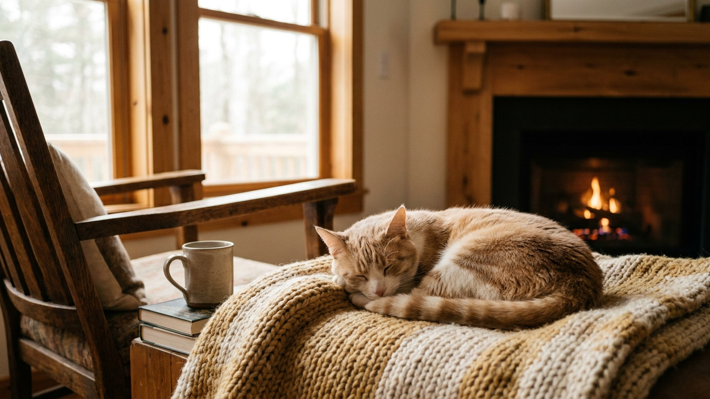

Вести выглядят так, будто их только что сшили из белого плюша — и при этом они готовы целый день гонять мышей в кустах. Порода рождалась для охоты в норах, и этот инстинкт никуда не делся за 200 лет разведения в квартирах. Характер вест-хайленд-уайт-терьера сильно расходится с его открыточной внешностью — а белоснежная шерсть требует особого подхода, который многие новые владельцы узнают слишком поздно.
🐾 У вас вест-хайленд-уайт-терьер?
AnimaLife соберёт уход под породу: к каким болезням есть склонность, что проверять по возрасту, чем кормить и когда пора к врачу. Бесплатно, прямо в мессенджере.
Собрать план ухода → Собрать в MAX →
У вас iPhone? AnimaLife есть в App Store
Вест-хайленд-уайт-терьер — самостоятельная, упрямая и очень громкая собака. Охотничий инстинкт живёт в каждом движении: вести реагируют на всё подвижное — белок, кошек, пакеты на ветру, чужих собак за забором. Спускать с поводка без надёжного отзыва опасно.
Порода подходит активным людям, готовым к ежедневным прогулкам с «разведкой» — нюханьем и свободным движением. Квартирное содержание возможно при достаточной нагрузке.
Шерсть вест-хайленд-уайт-терьера — двухслойная: жёсткий остевой слой и плотный мягкий подшёрсток. Именно жёсткий остевой слой защищает кожу от влаги и грязи и даёт характерную белоснежную текстуру.
Белизна шерсти поддерживается сухими или оттеночными шампунями для белых собак. Купать чаще раза в 3–4 недели не стоит — кожа пересыхает.
Вест-хайленд-уайт-терьер входит в число пород с наследственной предрасположенностью к чувствительной коже. Это не означает, что у каждой вести будут проблемы, — но владельцу важно знать сигналы, при которых нужно к ветеринарному дерматологу.
Выбор корма, частота купания и состав шампуня влияют на состояние кожи. Рацион и уходовые средства стоит согласовать с ветеринарным дерматологом при первых признаках дискомфорта — не после нескольких месяцев наблюдений.
Порода хорошо вписывается в жизнь активного человека или семьи с детьми школьного возраста. Важны ежедневные прогулки по 45–60 минут, готовность к треккингу, обучению и... шуму. Вест-хайленд-уайт-терьер — не декоративная собака и не молчаливый компаньон.
Тем, кто хочет «чистую белую собачку без хлопот», порода не подойдёт: тримминг требует бюджета и поиска специалиста, характер требует последовательности в воспитании, а кожа — внимательного наблюдения. Но если готовы — вести платят преданностью, живостью и неиссякаемой энергией.
🐾 Ваш питомец — вест-хайленд-уайт-терьер?
Заведите профиль в AnimaLife: приложение запомнит породу, возраст и вес и будет подсказывать по уходу именно для неё. Вопросы AI-ветеринару — круглосуточно и бесплатно.
Завести профиль → Завести в MAX →
У вас iPhone? AnimaLife есть в App Store
🐾 Понравился разбор?
Подпишитесь на канал — каждый день разбираем по одному тревожному симптому у кошек и собак: что в пределах нормы, а когда пора к врачу. Подпишитесь, чтобы не пропустить разбор, который может спасти здоровье вашего питомца.
Материал носит информационный характер и не заменяет очную консультацию ветеринара.